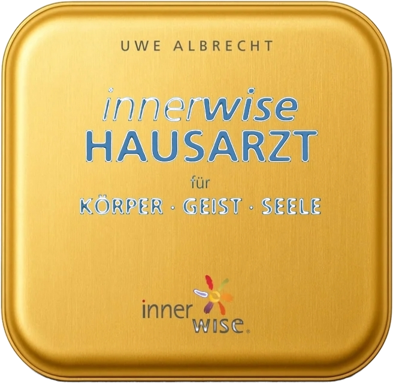

<!doctype html><html lang="de"><head><meta charset="utf-8">
<title>Allein am Küchentisch</title>
<link href="https://fonts.googleapis.com/css2?family=Bodoni+Moda:ital,opsz,wght@0,6..96,500;0,6..96,600;1,6..96,500;1,6..96,600&family=Raleway:wght@500;600;700;800&display=swap" rel="stylesheet">
<style>
*{margin:0;padding:0;box-sizing:border-box}
html,body{width:1080px;height:1350px;overflow:hidden}
body{font-family:Raleway,sans-serif;position:relative;color:#FBFAF0;background:radial-gradient(75% 50% at 50% 62%,#2b2b2b 0%,#1A1A1A 72%)}
body.light{background:#EADCC1;color:#1A1A1A}
body.beere{background:linear-gradient(180deg,#73013A 0%,#4a0126 100%)}
.brand{position:absolute;top:64px;width:100%;text-align:center;font-family:"Bodoni Moda",serif;font-weight:600;font-variation-settings:"opsz" 11;color:#C6A764;letter-spacing:.32em;font-size:25px}
.light .brand{color:#73013A}
.n{position:absolute;top:62px;right:70px;font-size:24px;font-weight:600;color:#EADCC1;letter-spacing:.1em}
.light .n{color:#1A1A1A}
.t{position:absolute;left:90px;right:90px;text-align:center}
.v{top:130px;bottom:130px;display:flex;flex-direction:column;justify-content:center}
h1{font-family:"Bodoni Moda",serif;font-weight:600;font-variation-settings:"opsz" 11;font-size:88px;line-height:1.08}
h1 em{display:block;font-style:italic;font-weight:600;margin-top:10px}
.s{margin-top:34px;font-size:38px;line-height:1.42;font-weight:500}
.s+.s{margin-top:26px}
.rule{width:140px;height:3px;background:#EADCC1;margin:44px auto 0;opacity:.8}
.light .rule{background:#73013A}
.q{font-family:"Bodoni Moda",serif;font-weight:600;font-variation-settings:"opsz" 11;font-style:italic;font-size:54px;line-height:1.2;margin-top:44px}
.swipe{position:absolute;bottom:56px;right:70px;font-size:26px;letter-spacing:.12em;color:#EADCC1;font-weight:700}
.light .swipe{color:#73013A}
.pill{display:inline-block;margin-top:30px;background:#C6A764;color:#1A1A1A;font-weight:800;letter-spacing:.14em;font-size:62px;padding:28px 66px;border-radius:999px;transform:rotate(-2deg)}
.ph{position:absolute;left:50%;transform:translateX(-50%);background:#FBFAF0;border-radius:40px;overflow:hidden;box-shadow:0 34px 70px rgba(0,0,0,.45)}
.ph img{display:block;width:100%}
ul{list-style:none;text-align:left;margin-top:40px;font-size:46px;line-height:1.3;font-weight:600}
ul li{padding:22px 0 22px 46px;position:relative;border-top:2px solid rgba(115,1,58,.3)}
ul li:before{content:"";position:absolute;left:2px;top:44px;width:22px;height:3px;background:#73013A}
ul li:last-child{border-bottom:2px solid rgba(115,1,58,.3)}
.note{font-size:37px;line-height:1.4;font-weight:500;text-align:left;margin-top:30px}
.card{background:#FBFAF0;color:#1A1A1A;border-radius:34px;padding:40px 46px;text-align:left;box-shadow:0 20px 40px rgba(0,0,0,.14)}
</style></head><body><div id="c"></div><script>
const S={
1:["",`<div class="t v" style="top:150px"><h1 style="font-size:90px">Du ziehst die Karte. <em>Und dann sitzt du allein damit am Küchentisch.</em></h1><div class="rule"></div><p class="q" style="margin-top:50px">„Lass ich das jetzt so stehen – oder muss ich noch was tun?“</p></div>`],
2:["light",`<div class="t v"><h1 style="font-size:96px">Nicht, weil du es nicht kannst.</h1><p class="s" style="margin-top:60px;font-size:46px;font-weight:600;padding:0 20px">Sondern weil allein Üben irgendwann <span style="white-space:nowrap">leise wird.</span></p><div class="rule"></div><p class="s" style="margin-top:44px">Du zweifelst. Fragst niemanden. Und irgendwann lässt du es einfach.</p></div>`],
3:["",`<div class="t v"><h1 style="font-size:92px">Dienstag, 21 Uhr. Die Kinder schlafen.</h1><div class="rule"></div><p class="s" style="font-size:42px;margin-top:50px">Du testest. Dein Arm sagt Ja. Dein Kopf sagt: <b style="font-family:'Bodoni Moda',serif;font-style:italic;font-weight:600;font-size:48px">Bild ich mir das nur ein?</b></p><p class="s" style="font-size:38px">Du googelst. Findest nichts. Gehst ins Bett.</p></div>`],
4:["beere",`<div class="t v"><h1 style="font-size:92px">Wahrnehmung wächst nicht im stillen Kämmerlein.</h1><div class="rule"></div><p class="s" style="font-size:42px;margin-top:50px">Sie wächst, wenn jemand neben dir sagt:</p><p class="q" style="margin-top:20px;font-size:60px">„Ja, genau das hab ich auch gespürt.“</p></div>`],
5:["light",`<div class="t v"><h1 style="font-size:80px">Eine Kundin hat es so gesagt:</h1><div class="card" style="margin-top:50px;transform:rotate(-1.5deg)"><p class="q" style="margin:0;font-size:52px;color:#73013A">„Ich glaube, dass die Live-Erfahrung wichtig ist.“</p></div><p class="s" style="margin-top:46px;font-size:40px;font-weight:600">Und eine andere:</p><div class="card" style="margin-top:20px;transform:rotate(1.2deg)"><p class="q" style="margin:0;font-size:46px;color:#73013A">„Mein Vertrauen in mich und meine Wahrnehmung wächst mit den Erfahrungen.“</p></div></div>`],
"5o":["light",`<div class="t v"><div class="card" style="transform:rotate(-1.2deg);padding:56px 50px"><p class="q" style="margin:0;font-size:56px;color:#73013A;font-style:normal">Eine Kundin erzählt mir, wie wichtig ihr das gemeinsame Erleben war.</p></div><div class="card" style="margin-top:34px;transform:rotate(1deg);padding:56px 50px"><p class="q" style="margin:0;font-size:56px;color:#73013A;font-style:normal">Eine andere, dass ihr Vertrauen in die eigene Wahrnehmung mit jeder Erfahrung wächst.</p></div></div>`],
6:["",`<div class="t v"><h1 style="font-size:96px">Probier es heute schon.</h1><div class="rule"></div><p class="s" style="font-size:40px;margin-top:50px">Du weißt nicht, ob eine Übung fertig ist? <b style="font-weight:800">Frag nicht deinen Kopf.</b></p><p class="s" style="font-size:40px">Mach den Armlängentest:</p><p class="q" style="font-size:56px;margin-top:22px">„Ist hier noch etwas zu tun?“</p><p class="s" style="font-size:40px;margin-top:22px">Und dann trau dem, was kommt.</p></div>`],
7:["",`<div class="t" style="top:150px"><h1 style="font-size:84px">Und jetzt stell dir vor, du übst das nicht mehr allein.</h1><p class="s" style="font-size:38px;margin-top:44px">Vier Dienstage live mit mir. Mit einer Gruppe, die mitspürt.</p><p class="s" style="font-size:38px">Und mit einem Werkzeug, das es noch gar nicht im Handel gibt: dem neuen innerwise Hausarzt.</p></div>`],
8:["beere",`<div class="t" style="top:150px"><h1 style="font-size:76px">Beim innerwise-Mentorentreffen durften wir ihn testen.</h1><p class="s" style="font-size:40px;margin-top:30px">Ich war völlig beeindruckt. Von seiner Tiefe. Von seiner Klarheit.</p><p class="s" style="font-size:38px;margin-top:14px">Er fragt nicht nur: Wofür? Sondern auch: Wogegen? Golden Circle: erst das Warum, dann alles andere.</p></div><div class="ph" style="top:880px;width:560px;transform:translateX(-50%) rotate(-1.5deg)"></div>`],
9:["light",`<div class="t" style="top:150px;text-align:left"><h1 style="font-size:86px;text-align:center">Goldene Dienstage mit dem Hausarzt</h1><ul style="margin-top:36px"><li>10.11.–1.12., 10:30–12 Uhr live auf Zoom</li><li>Aufzeichnungen</li><li>Telegram-Gruppe</li><li>Dein Hausarzt kommt per Post (Versand in DE inklusive)</li><li>195 € inkl. MwSt.</li></ul><p class="note">Für dich, wenn du die kleine Heilapotheke kennst oder den Kurs im Heilen gemacht hast. Neu hier? Kurs im Heilen (699 € inkl. MwSt.) + Goldene Dienstage.</p></div>`],
10:["",`<div class="t v"><h1 style="font-size:92px">Selbstheilung heißt nicht: allein heilen.</h1><div class="rule"></div><p class="s" style="margin-top:50px;font-size:42px">Kommentiere</p><div><div class="pill">HAUSARZT</div></div><p class="s" style="margin-top:36px;font-size:42px">und ich schick dir alle Infos.</p><p class="s" style="margin-top:56px;font-size:36px">Bestellbar bis Dienstag, 3.11. Die Goldenen Dienstage gibt es nur dieses eine Mal.</p></div>`]
};
const [k,num,tot]=location.hash.slice(1).split('_');
document.body.className=S[k][0];
document.getElementById('c').innerHTML=`<div class="brand">AISUN DODENHOFF</div><div class="n">${num}/${tot}</div>`+S[k][1]+(num!==tot?'<div class="swipe">WISCHEN →</div>':'');
</script></body></html>
